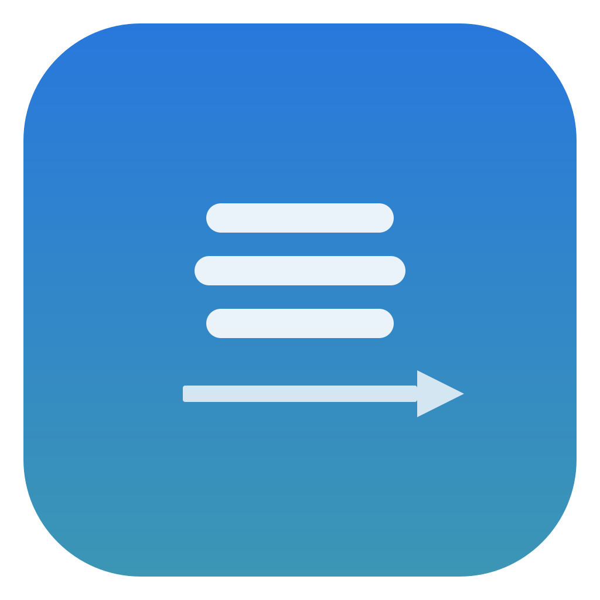

Map three-finger trackpad swipes to keyboard shortcuts on macOS.
Works in any app, regardless of system trackpad settings.
Configure different shortcuts for different apps, with a global fallback.
Runs quietly in the background with no dock icon.
Optional auto-start so it's always ready.
git clone https://github.com/asmeurer/swyper.git
cd swyper
make bundle # Builds build/Swyper.app
make install # Copies to /Applications